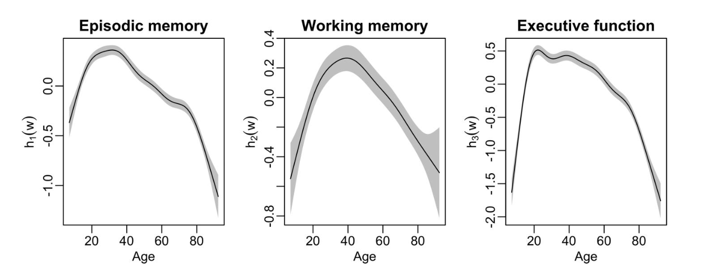

papers
Multilevel Semiparametric Latent Variable Modeling in R with "galamm"
This paper presents the R package "galamm", which contains open-source implementations for generalized additive latent and mixed models (GALAMMs). Published in Multivariate Behavioral Research.
Download
Abstract
We present the R package galamm, whose goal is to provide common ground between structural equation modeling and mixed effect models. It supports estimation of models with an arbitrary number of crossed or nested random effects, smoothing splines, mixed response types, factor structures, heteroscedastic residuals, and data missing at random. Implementation using sparse matrix methods and automatic differentiation ensures computational efficiency. We here briefly present the implemented methodology, give an overview of the package and an example demonstrating its use.
Figure 1

Citation
Sørensen, Ø. (2024). Multilevel Semiparametric Latent Variable Modeling in R with “galamm.” Multivariate Behavioral Research, 59(5), 1098–1105. https://doi.org/10.1080/00273171.2024.2385336
@article{sorensenMultilevelSemiparametricLatent2024,
title = {Multilevel {{Semiparametric Latent Variable Modeling}} in {{R}} with ``Galamm''},
author = {S{\o}rensen, {\O}ystein},
year = {2024},
month = sep,
journal = {Multivariate Behavioral Research},
volume = {59},
number = {5},
pages = {1098--1105},
publisher = {Routledge},
issn = {0027-3171},
doi = {10.1080/00273171.2024.2385336},
pmid = {39141406},
keywords = {Generalized additive models,item response theory,mixed models,mixed response,R,structural equation modeling}
}